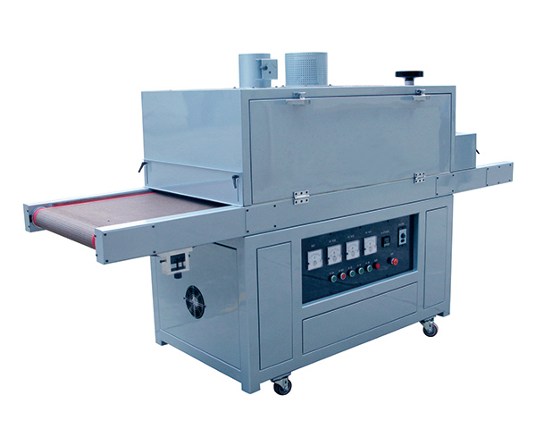

DRYING MACHINE
WIR-600
Conveyor Infrared Drying Machine
Winon Industrial Co., Ltd. — Dongguan, China
The Winon WIR-600 is a conveyor infrared drying machine used in pad and screen printing lines. Printed parts travel through a heated tunnel where infrared heating dries and cures the ink, with an adjustable belt speed to match the production pace.
Technical Parameters
| Mechanical Model | WIR-600 |
|---|---|
| Furnace Temperature | <= 150 C (max) |
| Workpiece Width | 0 ~ 600 mm |
| Object Height | 0 ~ 100 mm |
| Speed | 0 ~ 7 m/min |
| Power Specifications | 380V 50/60 Hz |
| Connected Load | 10 kW |
| Dimensions | 2600 x 870 x 1500 mm |
| Net Weight | 380 kg |
KEY FEATURES
Technical Features
High-Temperature Drying
Rapidly dries and cures inks with a furnace temperature of up to 150 C.
Adjustable Belt Speed
Conveyor speed from 0 to 7 m/min lets you tune drying time to ink and part type.
Wide Workpiece Support
Handles workpieces up to 600 mm wide and 100 mm high through the drying tunnel.
Interested in the WIR-600?
Contact Printway Marketing & Services for pricing, product demonstrations, spare parts, consumables, and technical support.
Request a Quote